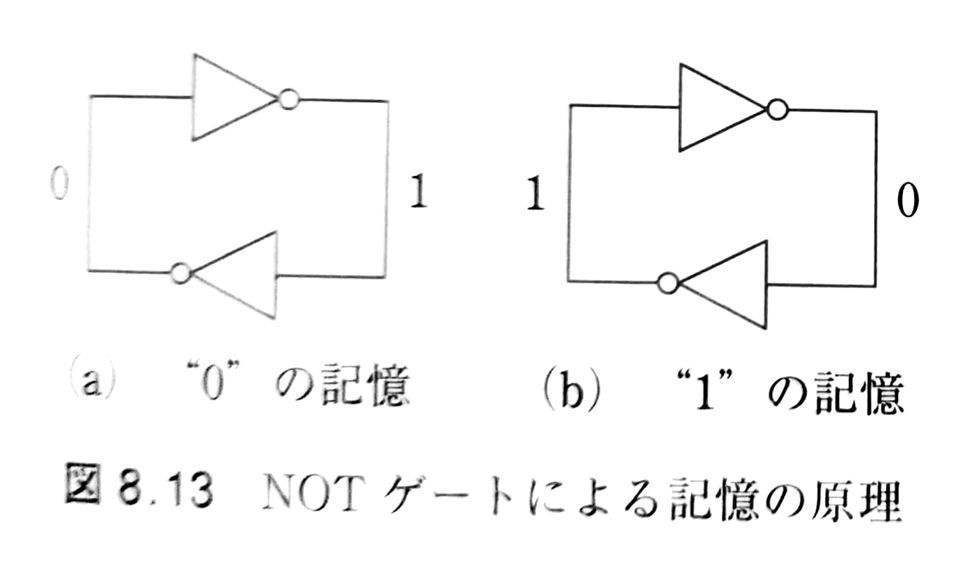

13. 揮発性記憶と不揮発性記憶#
到達目標
メモリの種類（ROMとRAM，揮発性と不揮発性）とその用途の違いを理解する．
キーワード
ROM／RAM
揮発性／不揮発性
フラッシュメモリ
SRAM／DRAM
13.1. これまでの復習#

出典「【図解】コンピュータの仕組み・構成と五大装置」https://elite-lane.com/computer/（2025年12月16日閲覧）
ALU（演算装置）：第6回（加算と減算），第12回（乗算と除算）
レジスタ：第10回（フリップフロップ），第12回（レジスタ）
制御装置：第9回（クロック・同期），第11回（順序回路の設計法）
物理実装（トランジスタ）：第8回（NOT・NANDの電気的動作）
メモリ：第10回（フリップフロップ），第13回（SRAM・DRAM・Flashメモリ）
13.2. 記憶とは#
記憶：ビット = 0/1 の安定な2状態．
安定性：2状態間のエネルギ障壁が高いほど保持しやすい（ノイズ・漏れ電流に強い）が，書き換えにコストがかかる．
物理実装の例（用途に応じて使い分ける）
電荷の有無（DRAM／フラッシュメモリ）
回路の再帰（SRAM／ラッチ／フリップフロップ）
磁化（MRAM）
分極（FeRAM）
相変化（PCM）
導電フィラメント（ReRAM）
13.3. メモリの種類#
ROM (Read Only Memory)
読み出し専用メモリ
データの書き込みは製造時，または特殊な機器で行う．
書き換え回数に制限がある．
電源を切ってもデータは残る（不揮発性メモリ）．
使用例：コンピュータの起動コード，電子辞書のデータ，組み込み機器のソフトウェアなど（SSD／組込みROM）
RAM (Random Access Memory)
任意のアドレスのデータを読み書きできる．
電源を切るとデータは消える（揮発性メモリ）．
電池からの電気の供給でデータを残すものもある．
使用例：演算の作業領域（キャッシュ／主記憶）
13.3.1. ROMの種類#
MROM (Mask ROM)
PROM (Programmable ROM)
ROM製造後に利用者がカスタマイズ可能
EPROM (Erasable PROM)
消去可能なPROM
データを複数回書き換え可能
強い紫外線を当てるなどしてデータを消去する．
EEPROM (Electrically Erasable PROM)
電気的に消去可能なPROM
高い電圧をかけることでデータの書き込みや消去を行う．
フラッシュメモリ
ブロック単位でデータを一括消去可能なEEPROM
ブロック単位で消去と書き込みを行うため動作が遅い．
NOR型とNAND型がある．
USBメモリ，メモリカード，SSD (Solid State Drive，Macbook airのストレージ)
NAND型 |
NOR型 |
|---|---|
大容量 |
小容量 |
アクセスが遅い |
アクセスが速い |
順次アクセス向け |
コード格納向け |
13.3.2. RAMの種類#
DRAM (Dynamic RAM)
キャパシタ（大容量のコンデンサ）に電荷を蓄えることでデータを保持する．
キャパシタからの電荷の漏れがあるため，定期的にリフレッシュ（再充電）する必要がある．
データの保持のために回路が動作しているため”Dynamic”と呼ばれる．
SRAM (Static RAM)
論理回路としてデータを保持する．
NOTゲートやフリップフロップの原理に基づきデータを保持する．
DRAMより複雑な回路となるため，実装コストが高い．
データの使用頻度によってメモリの種類を使い分ける．
使用場所 |
頻度 |
メモリの種類 |
|---|---|---|
CPU |
高頻度 |
レジスタ |
キャッシュメモリ |
中頻度 |
SRAM |
メインメモリ |
低頻度 |
DRAM |
13.3.3. DRAMの仕組み#

1bit分のデータを保持する回路は次の通り．

13.3.4. SRAMの仕組み#
NOTゲートの回路が基本コンセプト

1bit分のデータを保持する回路は次の通り．

13.4. 評価指標と使い分け#
評価表の軸（○良い，△普通，×弱い：あくまで目安）
種別 |
速度(遅延) |
密度 |
消費電力 |
価格/容量 |
書換耐久 |
保持 |
|---|---|---|---|---|---|---|
SRAM |
○ |
△ |
○（待機×） |
△ |
○ |
× |
DRAM |
△ |
○ |
△（リフレッシュ） |
○ |
○ |
× |
フラッシュメモリ(NAND) |
△〜× |
◎ |
○（待機◎） |
◎ |
△ |
○ |
MRAM等 |
○ |
△ |
○ |
△ |
○ |
○ |
13.5. まとめ#
ROM（不揮発性メモリ）：保持・保存向け（ROM/フラッシュ 他）．
RAM（揮発性メモリ）：高速・演算向け（SRAM/DRAM）
物理実装の差（電荷・磁化・相変化など）が記憶の保持・速度・耐久・密度を決める．